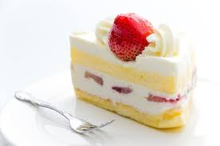

Pastel de Fresa 🍰

Descripción:
- 8 Comensales
- 45 min
- Dificultad Media
- Receta de horno
Ingredientes:
Marca tus ingredientes:
Preparación:
- Antes de empezar con la preparación del pastel de fresa, precalienta el horno a 180ºC
- Tamiza la harina junto con los polvos de hornear y la pizca de sal
- En un recipiente aparte, bate la mantequilla con 1/4 de taza de azúcar.
Cuando hayas obtenido una crema suave, sin dejar de batir incorpora el huevo y la ralladura de limón. Luego, añade poco a poco la harina y, por último, la leche.
Deberás mezclar hasta obtener una pasta suave.
- Engrasa un molde apto para horno y vierte la masa del pastel de fresa y hornéalo durante 20 minutos,
o hasta que al pincharlo con un palillo de madera salga limpio. Cuando esté listo, retíralo del horno y deja que se enfríe.
- Mientras el pastel de fresa se enfría, lava y corta las fresas en rodajas. Aparta algunas para la decoración final y machaca las demás junto con el azúcar restante.
- Cuando el pastel de fresa esté frío, córtalo por la mitad y úntalo con crema dulce para batir.
Luego, coloca la mezcla de fresas machacadas sobre la crema y vuelve a colocar la otra mitad del pastel encima.
Para finalizar, decora el pastel de fresa con más crema y fresas al gusto. ¡Disfruta!